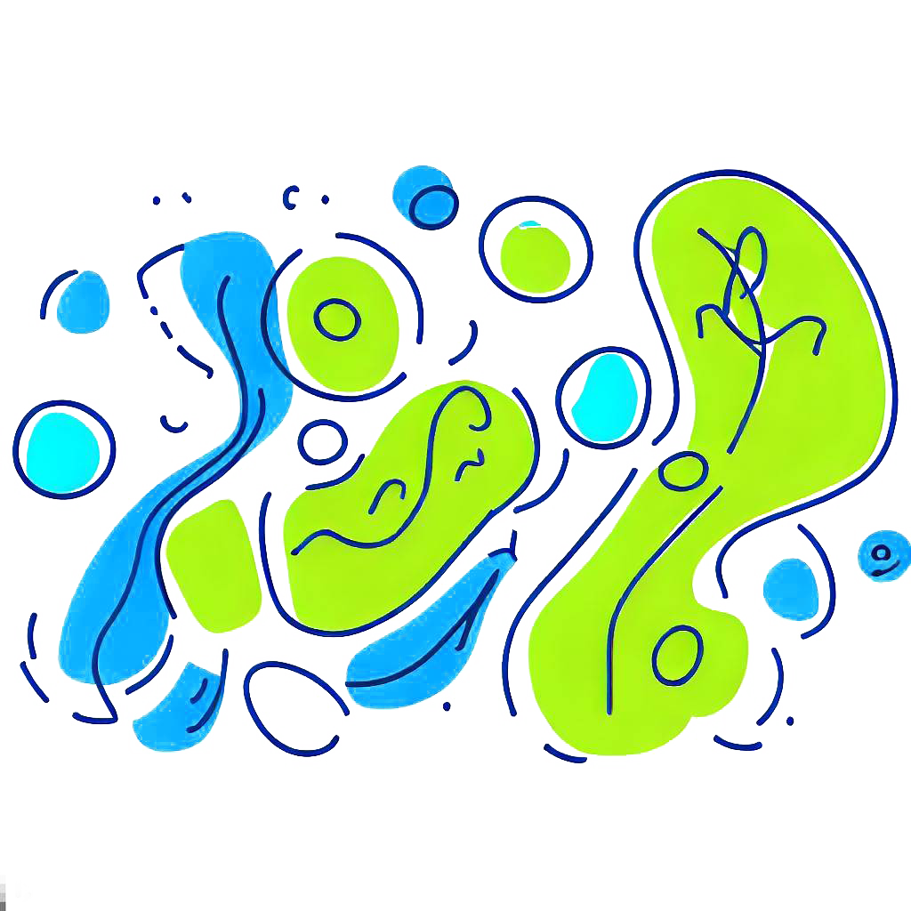

<div class="wrapper bg-background-color">
  <app-navbar></app-navbar>
  <div class="body">
    <div class="wallpaper wp-main">
      <div class="wallpaper wp-row">
        
        
      </div>
      
    </div>
    <app-textarea></app-textarea>
    <br />
    <app-button [testo]="'correct'" [color]="'secondary'"></app-button>
  </div>
</div>
